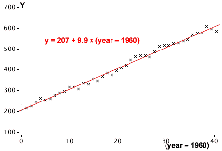

Least squares
Moving averages provide a good description of the trend in a time series but are less useful for forecasting future values. For forecasting, it is better to describe trend with a mathematical equation,
trend = function ( time )
The simplest such model is a linear model,
trend = b0 + b1 time
b0 and b1 can be estimated by least squares to minimise


Recoding the years
The large intercept in the example above is avoided if the years are recoded so that some year within the range of the data becomes "year 0".
trend = b0 + b1 (time − 1960)
This model is equivalent and gives the same fitted values and forecasts.
